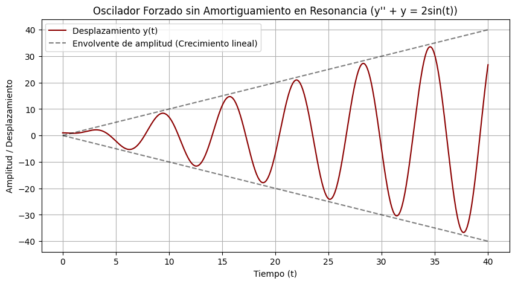

En el estudio de sistemas dinámicos reales, las ecuaciones homogéneas describen el comportamiento libre del sistema. Sin embargo, para modelar perturbaciones, entradas de señal o fuerzas externas activas, debemos resolver ecuaciones lineales no homogéneas de segundo orden con coeficientes constantes:
$$ ay'' + by' + cy = f(x) $$La solución completa del sistema se obtiene superponiendo la respuesta libre y la respuesta forzada:
$$ y(x) = y_c(x) + y_p(x) $$El Método de Coeficientes Indeterminados: Consiste en proponer una forma analítica para \(y_p\) construida a partir de la familia funcional de \(f(x)\) y sus derivadas sucesivas (polinomios, exponenciales, senos y cosenos), determinando posteriormente los coeficientes numéricos mediante sustitución directa.
Resuelve la ecuación diferencial no homogénea: \( y'' - y' - 2y = 4x^2 \)
Solución:
Para hallar la solución complementaria \(y_c\), planteamos y resolvemos primero la ecuación característica asociada:
$$ r^2 - r - 2 = 0 \implies (r - 2)(r + 1) = 0 \implies r_1 = 2, \quad r_2 = -1 $$Al obtener raíces reales distintas, la respuesta libre toma la forma:
$$ y_c(x) = C_1 e^{2x} + C_2 e^{-x} $$A continuación, construimos la solución particular \(y_p\). Como la función forzadora es un polinomio de segundo grado \(f(x) = 4x^2\), proponemos un polinomio completo del mismo grado. Dado que no existe coincidencia funcional con las exponenciales de \(y_c\), no hay solapamiento:
$$ y_p(x) = Ax^2 + Bx + C $$Calculamos ahora las derivadas de primer y segundo orden, obteniendo:
$$ y_p' = 2Ax + B $$ $$ y_p'' = 2A $$Sustituyendo estas expresiones en la ecuación diferencial original, tenemos:
$$ (2A) - (2Ax + B) - 2(Ax^2 + Bx + C) = 4x^2 $$Al reagrupar y ordenar los términos según las potencias decrecientes de \(x\):
$$ (-2A)x^2 + (-2A - 2B)x + (2A - B - 2C) = 4x^2 + 0x + 0 $$Para que la igualdad se cumpla, igualamos los coeficientes correspondientes en ambos miembros del sistema:
Obtenemos así la solución particular \( y_p(x) = -2x^2 + 2x - 3 \). Finalmente, combinando la respuesta libre y la forzada, la solución general resulta:
$$ y(x) = C_1 e^{2x} + C_2 e^{-x} - 2x^2 + 2x - 3 $$Resuelve la ecuación diferencial: \( y'' + 4y = 5e^x - 4\cos(x) \)
Solución:
Comenzamos calculando la solución complementaria \(y_c\) mediante su ecuación característica:
$$ r^2 + 4 = 0 \implies r = \pm 2i $$Puesto que las raíces son complejas conjugadas con \(\alpha = 0\) y \(\beta = 2\), la solución libre se expresa como:
$$ y_c(x) = C_1 \cos(2x) + C_2 \sin(2x) $$Para la solución particular \(y_p\), analizamos la excitación externa compuesta. Por el principio de superposición, proponemos \(Ae^x\) para el término exponencial y la combinación armónica \(B\cos(x) + C\sin(x)\) para el coseno. Como la frecuencia del forzador (\(\omega = 1\)) difiere de la frecuencia natural (\(\omega_0 = 2\)), no existe solapamiento:
$$ y_p(x) = Ae^x + B\cos(x) + C\sin(x) $$Calculamos ahora la segunda derivada de nuestra propuesta:
$$ y_p'' = Ae^x - B\cos(x) - C\sin(x) $$Sustituyendo \(y_p\) y \(y_p''\) en la ecuación diferencial original, obtenemos:
$$ (Ae^x - B\cos(x) - C\sin(x)) + 4(Ae^x + B\cos(x) + C\sin(x)) = 5e^x - 4\cos(x) $$Agrupando por familias de funciones:
$$ 5Ae^x + 3B\cos(x) + 3C\sin(x) = 5e^x - 4\cos(x) + 0\sin(x) $$Igualamos los coeficientes de cada término:
Por consiguiente, la solución general completa del sistema es:
$$ y(x) = C_1 \cos(2x) + C_2 \sin(2x) + e^x - \frac{4}{3}\cos(x) $$Resuelve la ecuación diferencial: \( y'' - 5y' + 6y = 2e^{3x} \)
Solución:
Iniciamos hallando la solución complementaria mediante la ecuación característica:
$$ r^2 - 5r + 6 = 0 \implies (r-2)(r-3) = 0 \implies r_1 = 2, \quad r_2 = 3 $$De aquí obtenemos la solución libre:
$$ y_c(x) = C_1 e^{2x} + C_2 e^{3x} $$Al analizar la función forzadora \(f(x) = 2e^{3x}\), notamos que la propuesta base \(Ae^{3x}\) ya está contenida en \(y_c\) debido a la raíz \(r = 3\). Para garantizar la independencia lineal, aplicamos la regla de modificación multiplicando por \(x\):
$$ y_p(x) = Axe^{3x} $$Calculamos ahora las derivadas aplicando la regla del producto:
$$ y_p' = Ae^{3x} + 3Axe^{3x} = e^{3x}(A + 3Ax) $$ $$ y_p'' = 3Ae^{3x} + 3e^{3x}(A + 3Ax) = e^{3x}(6A + 9Ax) $$Sustituyendo estas expresiones en la ecuación diferencial original, tenemos:
$$ e^{3x}(6A + 9Ax) - 5e^{3x}(A + 3Ax) + 6(Axe^{3x}) = 2e^{3x} $$Factorizando la exponencial \(e^{3x}\), observamos cómo los términos en \(x\) se cancelan idénticamente a cero (\(9Ax - 15Ax + 6Ax = 0\)):
$$ e^{3x} \left[ (9Ax - 15Ax + 6Ax) + (6A - 5A) \right] = 2e^{3x} \implies A e^{3x} = 2 e^{3x} \implies A = 2 $$Con esto obtenemos \(y_p(x) = 2xe^{3x}\). Así, la solución general completa resulta:
$$ y(x) = C_1 e^{2x} + C_2 e^{3x} + 2xe^{3x} $$Resuelve la ecuación diferencial: \( y'' - 4y' + 4y = 6e^{2x} \)
Solución:
Comenzamos planteando la ecuación característica para determinar la solución complementaria:
$$ r^2 - 4r + 4 = 0 \implies (r-2)^2 = 0 \implies r_1 = r_2 = 2 $$Al tratarse de una raíz real repetida, la solución libre toma la forma:
$$ y_c(x) = C_1 e^{2x} + C_2 x e^{2x} $$En este caso, la propuesta inicial \(Ae^{2x}\) colisiona con el primer término de \(y_c\). Si multiplicamos por \(x\), obtenemos \(Axe^{2x}\), la cual también está en \(y_c\). Para romper la dependencia lineal con todo el espacio homogéneo, debemos multiplicar por \(x^2\):
$$ y_p(x) = Ax^2e^{2x} $$Calculamos ahora sus derivadas correspondientes:
$$ y_p' = 2Axe^{2x} + 2Ax^2e^{2x} = 2Ae^{2x}(x + x^2) $$ $$ y_p'' = 2Ae^{2x}(1 + 2x) + 4Ae^{2x}(x + x^2) = e^{2x}(2A + 8Ax + 4Ax^2) $$Sustituyendo en la ecuación diferencial original, obtenemos:
$$ e^{2x}(2A + 8Ax + 4Ax^2) - 4e^{2x}(2Ax + 2Ax^2) + 4(Ax^2e^{2x}) = 6e^{2x} $$Factorizando \(e^{2x}\) y agrupando coeficientes por potencias de \(x\):
$$ e^{2x} \left[ x^2(4A - 8A + 4A) + x(8A - 8A) + 2A \right] = 6e^{2x} $$Vemos que las potencias \(x^2\) y \(x\) se anulan por completo, simplificándose a:
$$ 2A e^{2x} = 6 e^{2x} \implies 2A = 6 \implies A = 3 $$De este modo, la solución particular es \(y_p(x) = 3x^2e^{2x}\) y la solución general completa es:
$$ y(x) = C_1 e^{2x} + C_2 x e^{2x} + 3x^2 e^{2x} $$Resuelve el PVI: \( y'' + y = 2\sin(x) \), sujeto a las condiciones iniciales \( y(0)=1 \) y \( y'(0)=0 \).
Solución:
En primer lugar, resolvemos la ecuación característica homogénea \(r^2 + 1 = 0 \implies r = \pm i\), lo que nos da la solución complementaria:
$$ y_c(x) = C_1 \cos(x) + C_2 \sin(x) $$Dado que la fuerza impulsora \(2\sin(x)\) coincide con la frecuencia natural del oscilador (\(\omega_0 = 1\)), existe solapamiento directo con \(y_c\). Modificamos la propuesta armónica multiplicando por \(x\):
$$ y_p(x) = x(A\cos(x) + B\sin(x)) = Ax\cos(x) + Bx\sin(x) $$Calculamos sus derivadas aplicando la regla del producto:
$$ y_p' = A\cos(x) - Ax\sin(x) + B\sin(x) + Bx\cos(x) $$ $$ y_p'' = -2A\sin(x) - Ax\cos(x) + 2B\cos(x) - Bx\sin(x) $$Sustituyendo en la ecuación diferencial \(y'' + y = 2\sin(x)\), tenemos:
$$ (-2A\sin(x) - Ax\cos(x) + 2B\cos(x) - Bx\sin(x)) + (Ax\cos(x) + Bx\sin(x)) = 2\sin(x) $$Los términos en \(x\cos(x)\) y \(x\sin(x)\) se cancelan mutuamente, simplificándose a:
$$ -2A\sin(x) + 2B\cos(x) = 2\sin(x) $$Igualando coeficientes obtenemos \( -2A = 2 \implies A = -1 \) y \( 2B = 0 \implies B = 0 \), por lo que la solución particular resulta \(y_p(x) = -x\cos(x)\).
La solución general del sistema es entonces:
$$ y(x) = C_1 \cos(x) + C_2 \sin(x) - x\cos(x) $$Aplicamos la primera condición inicial \(y(0) = 1\) para hallar \(C_1\):
$$ y(0) = C_1(1) + C_2(0) - (0)(1) = 1 \implies C_1 = 1 $$Derivamos la solución general para aplicar la condición de velocidad inicial \(y'(0) = 0\):
$$ y'(x) = -C_1\sin(x) + C_2\cos(x) - \left[\cos(x) - x\sin(x)\right] $$ $$ y'(0) = -1(0) + C_2(1) - (1 - 0) = 0 \implies C_2 - 1 = 0 \implies C_2 = 1 $$Por lo tanto, la solución única del problema de valor inicial es:
$$ y(x) = \cos(x) + \sin(x) - x\cos(x) $$Consideremos un sistema mecánico masa-resorte-amortiguador sometido a una fuerza impulsora periódica continua:
$$ mx'' + cx' + kx = F_0 \cos(\omega t) $$El Fenómeno Físico de la Resonancia (Interpretación Física del Ejercicio 5):
En ausencia de fricción o amortiguamiento (\(c = 0\)), la frecuencia natural del sistema viene dada por \(\omega_0 = \sqrt{k/m}\). Cuando la frecuencia de la excitación externa coincide exactamente con la natural (\(\omega = \omega_0\)), la fuerza aplicada transfiere energía al sistema en perfecta fase con su movimiento. Matemáticamente, esto obliga a multiplicar la solución particular por la variable temporal \(t\), generando un término de la forma \( t \sin(\omega t) \). La amplitud oscilatoria crece lineal e indefinidamente, provocando fallas estructurales por sobreesfuerzo en puentes, tuberías o sistemas mecánicos.
En la figura siguiente se muestra la gráfica de un oscilador forzado

El paso crítico en el método de Coeficientes Indeterminados es determinar la estructura correcta de \(y_p\). Utiliza el siguiente prompt estructurado en un modelo de lenguaje para poner a prueba tu capacidad de razonamiento:
Actúa como un profesor riguroso de Ecuaciones Diferenciales.
Te voy a proporcionar una ecuación diferencial no homogénea. Tu única tarea es preguntarme cuál debe ser la propuesta analítica de mi "Solución Particular (y_p)".
Si cometo un error por no aplicar la regla de modificación por solapamiento (multiplicar por x o x^2), corrígeme mostrándome explícitamente las raíces del polinomio característico de la solución complementaria.
Inicia la sesión planteándome la siguiente ecuación diferencial para resolver: y'' - 6y' + 9y = 5e^(3x)
Demuestra tu dominio sobre el método de coeficientes indeterminados y sus implicaciones físicas completando el siguiente cuestionario.